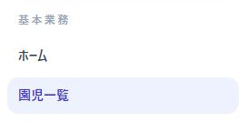
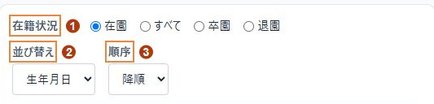
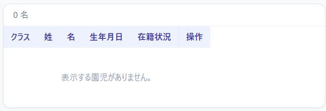
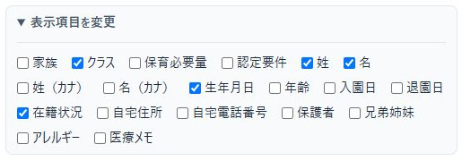
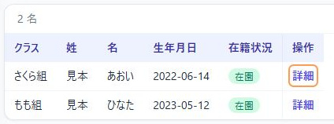
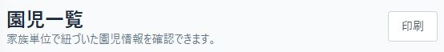

職員メニューの「基本業務」で、「園児一覧」を押します。スマートフォンでは、先に画面左上の「メニュー」を押してください。
最初は、いま園に通っているお子さんが、生年月日の新しい順に並びます。
お子さんの名前やクラスを見たいとき、園児一覧を開きます。卒園したお子さんを探したり、名簿に必要な項目を選んで印刷したりできます。

職員メニューの「基本業務」で、「園児一覧」を押します。スマートフォンでは、先に画面左上の「メニュー」を押してください。
最初は、いま園に通っているお子さんが、生年月日の新しい順に並びます。

いま選んだ条件に合う園児がいないと「表示する園児がありません。」と出ます。「在籍状況」を「すべて」にして、もう一度名前を見てください。


「表示項目を変更」を押します。見たい項目にチェックを入れると、表にその列が出ます。チェックを外すと、その列が隠れます。
たとえば名前と生年月日を確かめたいときは、「姓」「名」「生年月日」にチェックを入れます。園児の登録内容はそのままです。

見たいお子さんの行で、名前・クラス・生年月日を確かめます。その行の右にある「詳細」を押します。
この例で、さくら組のあおいさんを見るなら、上の行の「詳細」を押します。開いた画面で、本人や家族の情報を確認できます。
開いた画面でお子さんの名前を確かめます。見終わったら「一覧に戻る」を押します。
「園児を追加」「編集」「兄弟追加」は、園児台帳の管理を任されている職員に表示されます。自分の画面に見当たらないときは、園児の名前と依頼の内容を園の台帳担当者に伝えてください。

「在籍状況」と「表示項目を変更」で、名簿に載せたい園児と項目を選びます。画面右上の「印刷」を押します。
印刷の画面で、必要な名前と列が入っていることを確かめてから印刷してください。